Material System
A DRV Engine tem como objetivo fornecer um sistema de materiais bastante complexo, que permita criar visuais estilizados que são possiveis com outros moteres de renderização do o Blender. Isso significa que o sistema de materiais deve fornecer uma biblioteca de codigos para criar ruidos, amostrar texturas, entre outras funcionalidades, tato de maneira visual quanto via codigo. Essa pagina descreve como o sistema de materiais foi arquitetado para poder forncer toda a flexibilidade pretendida.
Shaders compilados
Na DRV Game Engine existem duas formas de se criar materiais, uma delas é usando arquivos de shader GLSL, e a outra usando shader nodes. Em ambas as versões, todas as funcionalidades estão disponiveis, ou seja, caso você use um node de ruido com a programação visual, o mesmo node estará disponivel através uma função, em uma diretiva include para seu codigo.
Um material é composto de dois fatores. Os dados de entrada e o codigo fonte dos shaders, podendo ter origem em um shader node ou um arquivo de codigo GLSL. Os dados de entrada do shader podem ser dados globais ou por instancia. Isso significa, que cada objeto desenhada no tela pode ter dados que são exclusivos para ele, quanto ter dados que são em comum para todos os objetos. Por exemplo, um shader PBR possui como entrada mapas de iluminação difusa e tabelas de pesquisa, que são sempre as memas para todos os objetos. Por outro lado, cada objeto deve ter valores unicos de textura albedo, normalmap entre outros atributos da superficie. Alem dos atributos locais e globais da engine, os materiais possuem uma entrada de dados padrão da engine. Por exemplo, lampadas, cameras, tempo decorrido podem ser solicitados e a game engine colocara esses valores em uniforme buffer de entrada para todas as chamadas do shader.
Dado essas informações, podemos dividir nossos dados em 3 partes, a primeira organizamos dentro de uma estrutura de dados chamada PerFrameData:
Vale notar, que se quisermos obter a projeção para varios shadowmaps, devemos criar arrays de tamanho fixo como mostrado na segunda definição da estrutura, uma vez que não é possivel ter ponteiros apontando para memoria de tamanho variado na GPU. Mapas de sobra são caros por terem que renderizar muitas vezes a mesma cena, principalmente para luzes pontuais. Logo, sabemos que não havera necessidade de muitos shadowmaps, sendo eles de 4 a 8 mapas normalmente. Em alguma aplicações, atlas shadowmaps e CSM (Cascade shadow map) são usados, permitindo um numero maior de fontes de luz que geram sobras, a um custo menor de memoria, mas ainda com o alto de renderização.
Para obter esses dados na GPU existem duas formas. A primeira, é adicionando um uniforme que contenha a struct como desejada. Ao compilar o shader, a game engine fara a reflection e procuraram por um uniforme chamado perFrameData, que normalmente estará no binding = 0, mas não necessariamente, e preenchera os campos. Para poupar memoria, não teremos um buffer com uma coleção de matrizes para cada objeto somente como os atributos desejados. Como temos uma pequena quatia de dados, todos eles serão enviados para todos os shader, ou seja, o usuario não tem a opção de não declarar inverseLightProjectionView caso seu shader não gere sobrar, mas não é um problema de performance no momento, pelo contrario, aparente ser uma escolha mais otimizada um pequeno blob de memoria ao lugar de um conjunto de dos para cada malha onde varios deles podem acabar se repetindo diversas vezes.
Para evitar confuzões, um include é fornecido para dar acesso ao dados, apenas use:
Apesar do include ser opicional e so os shaders que os definirem irão ter seus dados "bindados", não vejo em que momento o usuario não iria querer receber tais dados, pontando, sempre os inclua.
O proximo ponto a ser analizado é a parte do material para o shader de vertices. Nesse ponto possuimos tres situações. Chamada de desenho simples, chamada de desenho indireta e desenho intanciado. Na primeira, cada objeto possui sua propria chamada de desenho, na segunda, um buffer dizendo quais objetos devem ser desenhado é enviado para GPU, e na terceira, um mesmo objeto é desenhando um numero determinado de vezes, e para cada chamada de desenho, temos um id que nos permite obter os dados para a instancia especifica.
Para todos os casos, temos as matrizes de worldTransform que dizem como o objeto deve ser tranformado em seu espaço global. A logica aqui é bem simples, cada modelo, quando desenhado, irá acessar sua matriz de transformação quando necessario, em um indice de um array continuo que possui as tranformações de todos os objetos em cena na hora de ser desenhado. A imagem abaixo mostra como isso se parece.

Para começar com algo simples, vamos analizar a chamadas de desenho comum. Primeiramente, temos que entender que no vulkan, não existe os uniformes tradicionais onde definimos seus valores para cada chamada de desenho fazendo uma loop onde definimos os valores dos uniformes e em seguida desenhamos o objeto, e assim sucessivamente até que todos os objetos sejam desenhados. No vulkan, teremos um uniforme buffer, onde os dados de tranformação de todos os modelos serão armazenados, e durante a chamada de desenho, apenas informaremos o indice, dentro do uniform buffer o quão está o dado para o objeto sendo desenhado. Sendo assim, não a necessidade de indexar a matrix de dados dentro do shader, apenas declarar um uniforme da seguinte forma:
Mas como sempre, para evitar confuzões e manter um padrão, podemos apenas usar uma diretiva include para buscar os dados:
Para desenhos instanciados a coisa muda um pouco de forma, não temos mais apenas um uniforme que ja possui o valor o qual o objeto deve acessar, receberemos uma matriz de tamanho indefinido onde o shader deve acessar o indice desejado para determinado elemento.
Como se pode ver, no shader em questão eu usei diretamente posições para os modelos ao inves de uma matriz de tranformação 4x4 como mormalmente é feito. Isso acontece devido a um dos grandes gargalos da programação grafica ser a velocidade de acesso a memoria, logo, se um shader precisa apenas da posição do objeto, a velocidade de desenho aumenta, uma vez que muito menos memoria é lida no shader.
Para exemplificar isso, vamos analizar de onde esse shader for extradio. Originalmente, esse trecho de codigo pertence a um shader de renderização de grama. Para esse shader, a game engine usava uma malha 3D como base para distribuição da grama. Nesse exemplo, a engine usava um algoritimo chamado "Poisson Disc", capas de gerar amostras aleatoriamente sobre uma malha 3D, sem que haja sobreposição entre os objetos, dado um raio de distancia minimo aceitavel. Esse algoritimo é pesado demais para ser executado a cada frame na GPU. Dito isso, geramos uma array de matrizes de tranformação que diz onde cada grama deve ser colocada.
Nessa cena tinhamos 200 mil folhas de gramas individuais sendo animadas, o que resultada em aproximadamente 12 MB de dados, apenas para as gramas, sendo indexados no shader a cada frame. Uma vez que precisamos so da posição, podemos armazenar o dados em uma matriz de vec4 (para manter o olhimamento de memoria correto) e assim gastar paroximadamente 3MB de memoria, tornando mais eficiente o acesso dentro dos shaders. Uma vez, esclarecido isso, o usuario pode tanto solicitar a matrix de transformação completa, quanto apenas os componentes individuais desejando, e deixar com que a game engine use reflection, para fazer binding no buffer correto.
Outro ponto importante a ser tratado aqui, são os Scene Graphs. Muitas vezes foi um pouco confuso para mim entender como eles entraria aqui, então considero importante, mesmo que em um sistema de materiais, explicar como o Scene Graph interagem como os materiais, uma vez que eles são shaders controlados diretamente pelo renderizador. Supomos que tenhamos o seguinte grafo de cena:

Uma solução é iterar sobre cada no, so pai para os filhos, calcular a posição no mundo do filho em relação ao pai, enviar a matriz para o shader e desenhar. Como cada nó pode ter uma Geometria, e cada Geometria pode ter um material diferente, nos temos que dar Binding no shader (ou no pipeline, no caso do vulkan) para cada objeto que formos desenhar, o que é muito custoso. Você poderia verificar se o proximo objeto desenhando usa o mesmo shader do anterior para evitar retrabalho, mas isso ainda pode gerar muitas trocas de contexto. Alem de que, calcular as matrizes de transformação enquanto se desenha a cena, gera muitas falhas de cache, uma vez que acessaremos muitos dados ao memso tempo, de tarefas diferente, para chegar ao nosso resultado final.
Temos dois problemas enormes, que podem ser concertados com uma mesma solução, a programação orientedada a dados. Tudo é sobre como nos organizamos os dados, e o se da muito bem como esse tipo de programação. Então vamos tratar um problema de cada vez. Primeiro como o Scene Graph sera resolvido e enviado para GPU e o segudno como como as malhas vao ser enviadas para GPU, de forma que cada pipeline tenha sua função Bind chamada apenas uma vez, nos dado o maximo de eficientencia.
Para resolver o problema do Scene Graph usaremos um sistema de ECS (Entity Component System). O ECS naturalmente mapeia entidades com ID's unicos para valores em uma matriz continua de dados, o que parece uma caminho bem natual para nós aqui. O ECS nada mais é que um aprimoramento de dados de uma outra estrutura de dados chamada Sparse Set.

Uma dos maiores desafios encontrados, é como definir as variaveis de entrada de um shader dado um material. Se trabalharmos com shader nodes, esse ponto é mais simples, uma vez que definimos o codigo fonte do shader apos a montagem dos nodelos, logo, sabemos todos os uniformes que iremos gerar, e podemos preenche-los, porem, se tivermos um arquivo de shader glsl ou sprv compilado, a unica forma de sabemos quais a entradas e saidas de um shader, é fazendo o parser do condigo fonte do shader ou usando reflection em vulkan.
Dito isso, nosso sistema de materias, sempre iremos compilar os shaders, seja eles gerados atravez de nodes ou de arquivos glsl, usar reflection, que esta disponivel na SDK do vulkan, e condigurar os pipelines vulkan apartir das entradas definidas pela reflection.